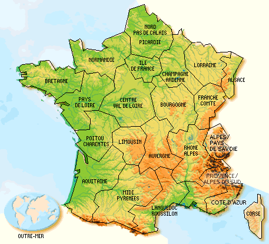

- Le président-Directeur-Général Fondateur de l'entreprise
L’entreprise Touslestrucs est l’œuvre de M. Jean Vanplin qui l’a fondée en 1995.
Originaire de Cinq-Mars-la-Pile, chimiste diplômé;, il a découvert le secret du produit Truc dans son laboratoire personnel. - La production
Une usine est installée à Monts depuis 1995 pour la fabrication des produits Truc et Antitruc.
Le produit de luxe, Supertruc, est sorti du laboratoire de Cinq-Mars-la-Pile en 1996 ; il est maintenant aussi fabriqué à Monts. Il est question de bâtir bientôt d’autres usines en France.
Très dynamique, la Force de vente est composée de cinq commerciaux répartis en cinq secteurs géographiques. La carte présente ces cinq secteurs

Bien sûr, ce découpage va bientôt évoluer ; la demande en produit Truc étant sans cesse croissante.
Retour à l'accueil